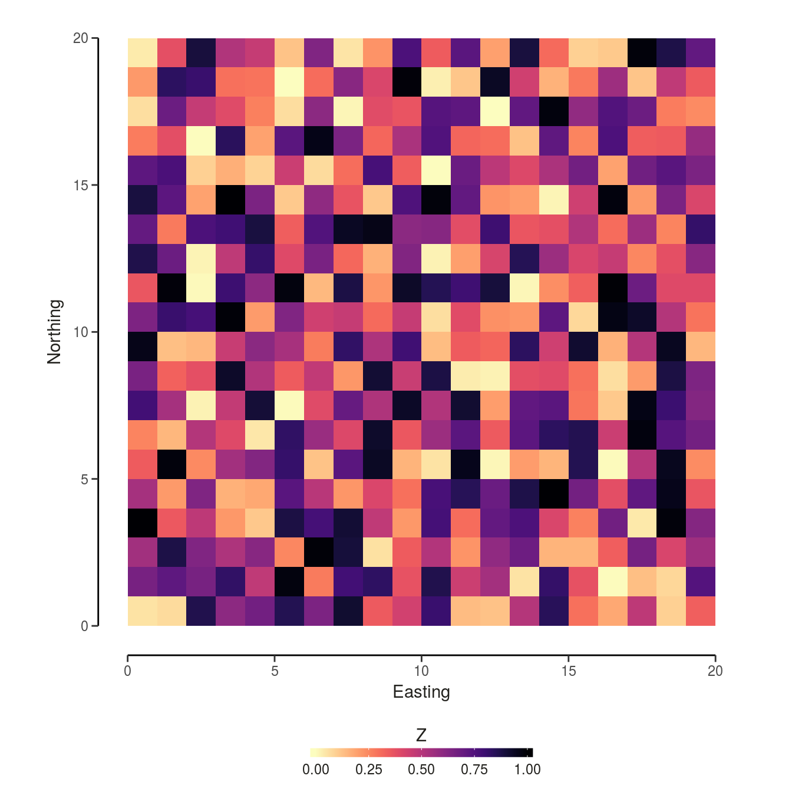
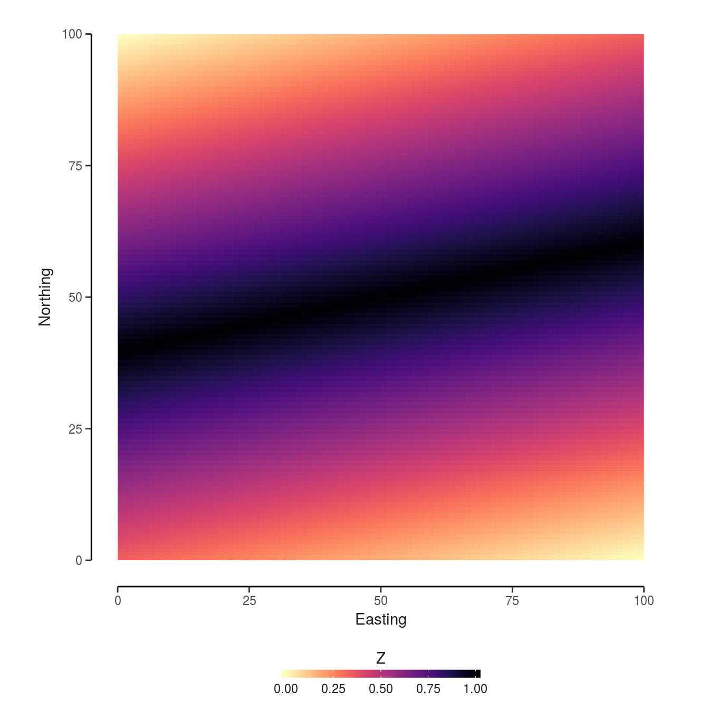
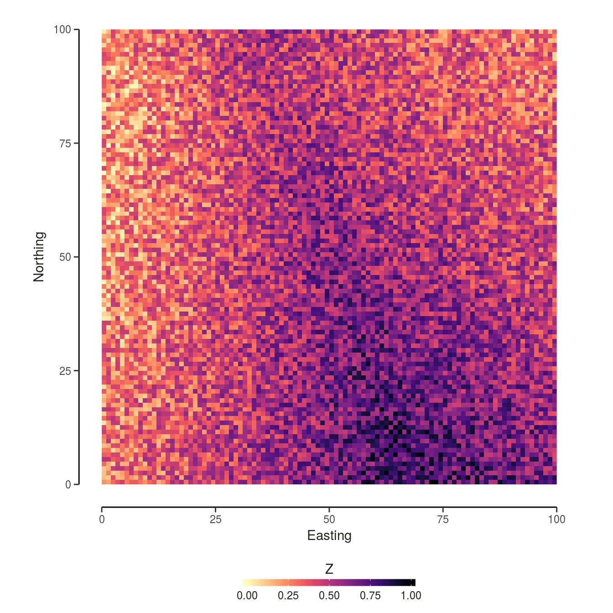
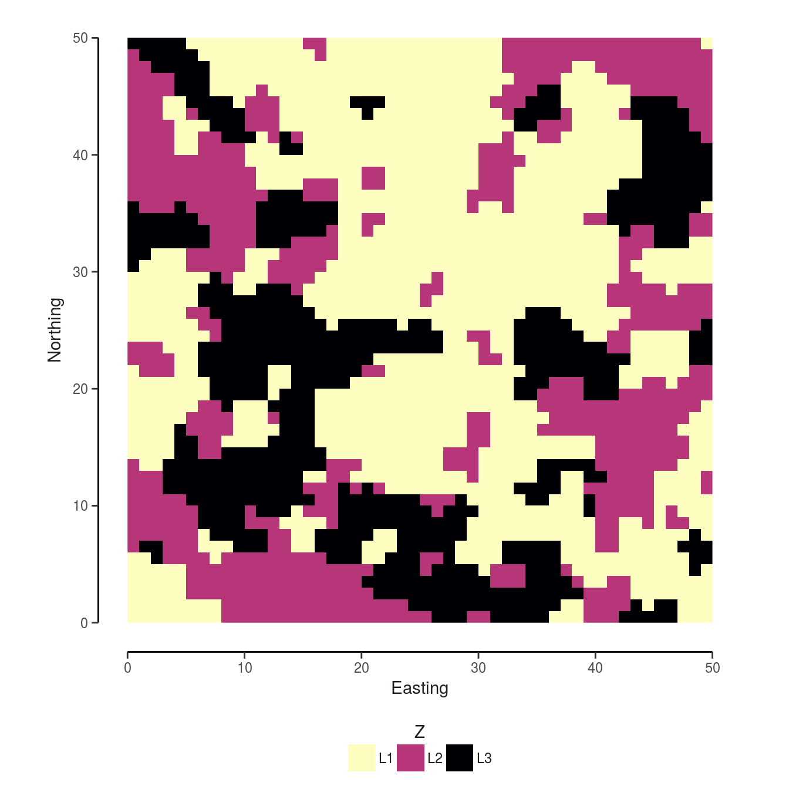
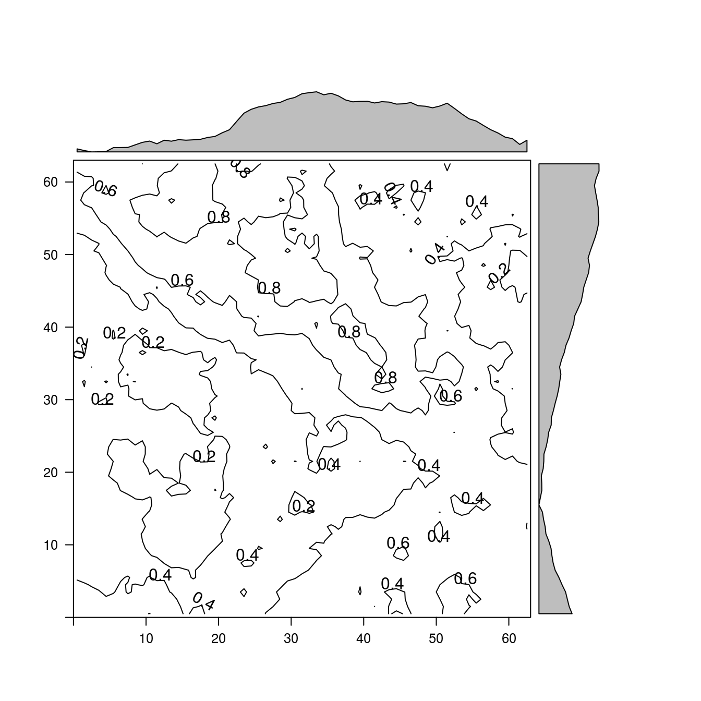
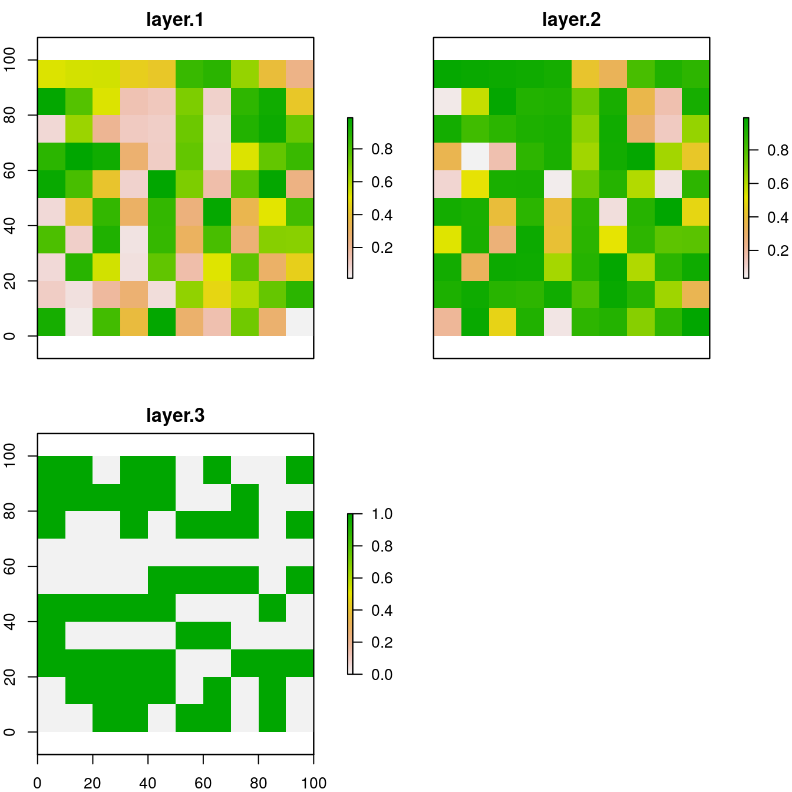
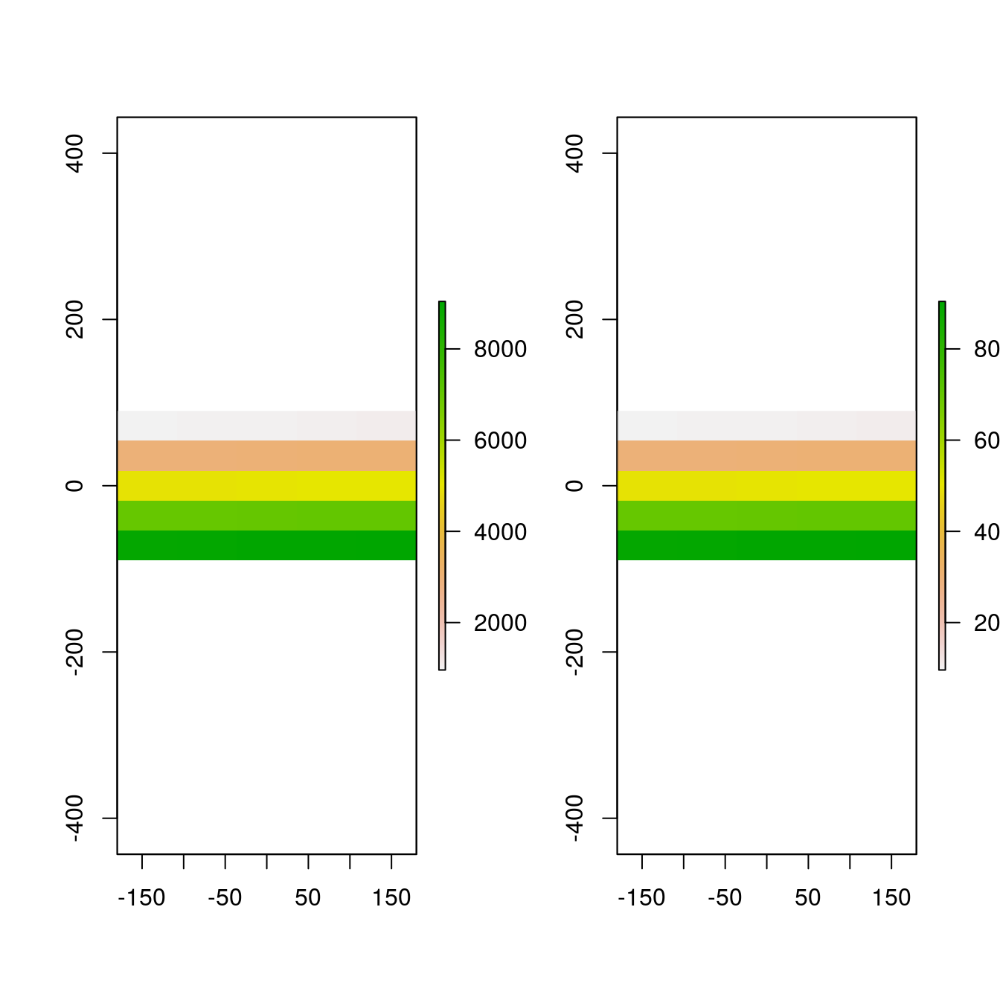
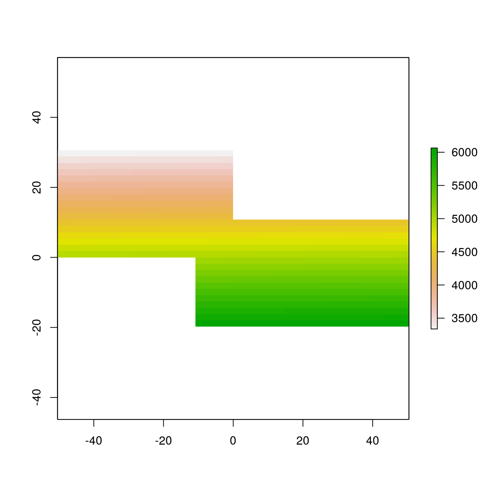

NLMR is a R package designed to generate neutral landscape models (NLMs), simulated landscapes used to explore landscape scale ecological patterns and processes. The NLMR package was designed with a similar philosophy to the Python package NLMpy (see Etherington, Holland, and O’Sullivan 2014), offering a general numeric framework allowing for a high degree of flexibility. Most of the common NLMs, as described by the relevant literature, can be produced using NLMR. Additionally, NLMR allows users to blend multiple landscapes, classify landscape elements categorically and measure basic landscape level metrics. All NLMs produced take the form of two-dimensional raster arrays with specified row and column dimensions and cell values ranging between 0 and 1. By returning raster arrays, NLMs are easily integrated into the workflow of many useful spatial analysis packages, notably the raster package.
NLMR supplies 16 NLM algorithms. The algorithms differ from each other in spatial auto-correlation, from no auto-correlation (random NLM) to a constant gradient (planar gradients) (see Palmer 1992).
The 16 NLM algorithms are:
The basic syntax used to produce a NLM landscape is:
nlm_modeltype(nCol, nRow, resolution, ...)For example, to produce a simple random neutral landscape one could use the following code:
x <- NLMR::nlm_random(20,20)
NLMR::util_plot(x)
Multiple NLM rasters can be blended or merged together to create new landscape patterns. A single primary or base raster can be blended with any number of additional secondary rasters, with optional scaling factors used to control the influence of the secondary rasters.
The util_merge function is used to blend the rasters as in the example below:
#Create primary landscape raster
pL <- NLMR::nlm_edgegradient(nCol = 100,
nRow = 100)
NLMR::util_plot(pL)
#Create secondary landscape rasters
sL1 <- NLMR::nlm_distancegradient(nCol = 100,
nRow = 100,
origin = c(10, 10, 10, 10))
sL2 <- NLMR::nlm_random(nCol = 100,
nRow = 100)
mL1 <- NLMR::util_merge(pL,
c(sL1, sL2),
scalingfactor = 1)
NLMR::util_plot(mL1)
Landscape rasters generated by NLMR contain continuous values between 0 and 1, though these can be converted into categorical values using util_classify. The number of classes and the proportion of the NLM raster assigned to each class is determined using a weighting vector. If the weighting vector does not sum to 1, the sum of the weightings is divided by the number of vector elements and these are used to define the class proportions. By default classes are numerical starting from 1. If non-numerical levels are required, level_names can be specified. These classes can be plotted by selecting discrete = TRUE in util_plot. The number of cells contained by each class can be calculated using metric_area.
nr <- NLMR::nlm_randomcluster(nCol = 50,
nRow = 50,
resolution = 1,
neighbourhood = 4,
p = 0.5)## Loading required namespace: deldirweighting <- c(0.5, 0.25, 0.25)
cr <- NLMR::util_classify(nr,
weighting = weighting,
level_names = c("L1", "L2", "L3"))
NLMR::util_plot(cr, discrete = TRUE)
NLMR::metric_area(cr)## $Total_Area
## # A tibble: 6 x 2
## count class
## <dbl> <lgl>
## 1 NA NA
## 2 NA NA
## 3 NA NA
## 4 NA NA
## 5 NA NA
## 6 NA NA
##
## $Proportion_Area
## count class
## 1 NA NA
## 2 NA NA
## 3 NA NA
## 4 NA NA
## 5 NA NA
## 6 NA NAThe raster package, the major framework for NLMR, is built around a number of classes, most importantly the RasterLayer, RasterBrick, and RasterStack classes. The latter two basically comprising collections of multiple RasterLayers with the same spatial extent and resolution.
A RasterLayer is defined by its spatial dimensions (number of rows, number of columns and resulting number of cells) and its spatial extent. These two parameters define the spatial resolution of the layer.
A RasterLayer can be manually created as follows:
library(raster)
r <- raster(ncol=10, nrow=10, xmn=0, xmx=100, ymn=0, ymx=100)
r## class : RasterLayer
## dimensions : 10, 10, 100 (nrow, ncol, ncell)
## resolution : 10, 10 (x, y)
## extent : 0, 100, 0, 100 (xmin, xmax, ymin, ymax)
## coord. ref. : NAHowever, the raster created is empty, the cells containing no values. We can add values using the following code:
## class : RasterLayer
## dimensions : 10, 10, 100 (nrow, ncol, ncell)
## resolution : 10, 10 (x, y)
## extent : 0, 100, 0, 100 (xmin, xmax, ymin, ymax)
## coord. ref. : NA
## data source : in memory
## names : layer
## values : 0.002658622, 0.9974238 (min, max)By running the above code we have just created one of the most simple NLMs - a completely random landscape.
To visually examine the created RasterLayer, we can use raster’s built-in plotting function ( but recommend to the use of NLMR::util_plot, for aesthetic and viridis reasons ):
plot(r)
In landscape ecology it is quite usual to try and infer ecological dynamics using multiple environmental datasets derived from the same geographical area. The raster packages uses RasterStack and RasterBrick for this kind of multi-layer data.
RasterStack is basically a list of RasterLayer with the same spatial extent and resolution. RasterBrick, however, is a truly multi-layered object. This means that all layer share a single reference for dimensions and extent (which often results in it being more efficient to process a RasterBrick than a RasterStack).
r2 <- r * (abs(0.5 - r) * -2) + 1
r3 <- NLMR::util_classify(r, c(0.5, 0.5))
s <- stack(r, r2, r3)
s## class : RasterStack
## dimensions : 10, 10, 100, 3 (nrow, ncol, ncell, nlayers)
## resolution : 10, 10 (x, y)
## extent : 0, 100, 0, 100 (xmin, xmax, ymin, ymax)
## coord. ref. : NA
## names : layer.1, layer.2, layer.3
## min values : 0.002658622, 0.007715336, 0.002658622
## max values : 0.9974238, 0.9973555, 0.9974238plot(s)
The dimensions, resolution and extent of a Raster* object can be changed:
## [1] 10 10 1## [1] 10 42 1## [1] 10 10## [1] 42 42## class : Extent
## xmin : 0
## xmax : 100
## ymin : 0
## ymax : 100## class : Extent
## xmin : 0
## xmax : 42
## ymin : 0
## ymax : 42As long as the first argument of your algebra operation is a Raster* object, you can use most of the R functions to transform your raster.
… or replace values in a raster:
## class : RasterLayer
## dimensions : 5, 5, 25 (nrow, ncol, ncell)
## resolution : 72, 36 (x, y)
## extent : -180, 180, -90, 90 (xmin, xmax, ymin, ymax)
## coord. ref. : +proj=longlat +datum=WGS84 +ellps=WGS84 +towgs84=0,0,0
## data source : in memory
## names : layer
## values : 1, 25 (min, max)The raster package provides all the functions that would expected from a typical GIS software.
Some examples are:
r <- raster(ncol=100, nrow=100)
values(r) <- 1:ncell(r)
# aggregate/disaggregate raster
ra <- aggregate(r, 20)
rd <- disaggregate(ra, 20)
par(mfrow=c(1,2))
plot(ra)
plot(rd)
r <- raster(ncol=100, nrow=100)
values(r) <- 1:ncell(r)
# crop and merge
r1 <- crop(r, extent(-50,0,0,30))
r2 <- crop(r, extent(-10,50,-20, 10))
m <- merge(r1, r2)
plot(m) ### Assessing raster object slots
All Raster* objects share common slots to store information. Perhaps the most interesting (the values) can be accessed via:
## [1] 1 2 3 4 5 6 7 8 9 10 11 12 13 14 15 16 17
## [18] 18 19 20 21 22 23 24 25 26 27 28 29 30 31 32 33 34
## [35] 35 36 37 38 39 40 41 42 43 44 45 46 47 48 49 50 51
## [52] 52 53 54 55 56 57 58 59 60 61 62 63 64 65 66 67 68
## [69] 69 70 71 72 73 74 75 76 77 78 79 80 81 82 83 84 85
## [86] 86 87 88 89 90 91 92 93 94 95 96 97 98 99 100# ... or by treating the raster like a vector
r[]## [1] 1 2 3 4 5 6 7 8 9 10 11 12 13 14 15 16 17
## [18] 18 19 20 21 22 23 24 25 26 27 28 29 30 31 32 33 34
## [35] 35 36 37 38 39 40 41 42 43 44 45 46 47 48 49 50 51
## [52] 52 53 54 55 56 57 58 59 60 61 62 63 64 65 66 67 68
## [69] 69 70 71 72 73 74 75 76 77 78 79 80 81 82 83 84 85
## [86] 86 87 88 89 90 91 92 93 94 95 96 97 98 99 100## [,1] [,2] [,3] [,4] [,5] [,6] [,7] [,8] [,9] [,10]
## [1,] 1 11 21 31 41 51 61 71 81 91
## [2,] 2 12 22 32 42 52 62 72 82 92
## [3,] 3 13 23 33 43 53 63 73 83 93
## [4,] 4 14 24 34 44 54 64 74 84 94
## [5,] 5 15 25 35 45 55 65 75 85 95
## [6,] 6 16 26 36 46 56 66 76 86 96
## [7,] 7 17 27 37 47 57 67 77 87 97
## [8,] 8 18 28 38 48 58 68 78 88 98
## [9,] 9 19 29 39 49 59 69 79 89 99
## [10,] 10 20 30 40 50 60 70 80 90 100Etherington, Thomas R., E. Penelope Holland, and David O’Sullivan. 2014. “NLMpy: A Python Software Package for the Creation of Neutral Landscape Models Within a General Numerical Framework.” Methods in Ecology and Evolution 6 (2): 164–68. doi:10.1111/2041-210X.12308.
Palmer, Michael W. 1992. “The Coexistence of Species in Fractal Landscapes.” The American Naturalist 139 (2): 375–97. doi:10.1086/285332.